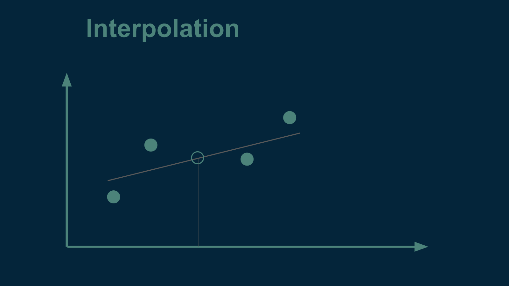
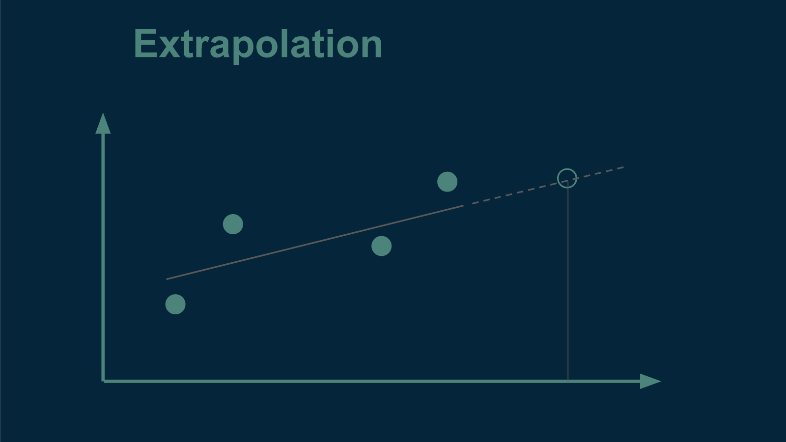

- Part 1: Choosing between models [post]
- Part 2: Separating signal from noise [post]
- Part 3: Choosing a loss function [post]
- Part 4: Splitting the data [post]
- Part 5: Choosing model candidates [post]
- [slides] [code]
Splitting the data into training and testing sets
Most often, we are not handed separate training and testing data sets, but rather one big grab bag of data. When this is the case, we are responsible for splitting it ourselves.
When we do this we have to keep in mind that there are two different broad categories of generalization, interpolation and extrapolation. Depending on which we are interested in, we will divide the data differently.
An example of interpolation is if we want to estimate the value of annual temperatures that are missing from the middle of our data set. In this case, we know several values both before and after. An example of extrapolation would be if we wanted to make estimates outside of the range of our original data - either for dates that come before or dates that come after. Another type of extrapolation would be applying the pattern to a different town nearby. In both cases, we would try to infer something about the world that extended beyond the reach of what we had measured.
 If we wanted to divide our data set to test for interpolation performance, it would be straightforward. We could randomly sort every year's data into one of two bins, testing or training. This is what we did in part 1.
However, if we wanted to divide our data set to test for extrapolation, that would require a little more subtlety. If we were interested in making predictions about the future, for instance, we would have to make sure to test the model on data from the future that it had never seen and had not been trained on. Otherwise, it would have an unfair advantage. Knowing what the temperature will be in two years helps to make a better prediction about what it will be next year. Knowing future years' temperatures would tip the model off to any upcoming trends or changes in the temperature pattern. Most importantly, this is an advantage that the model will not have when we put it into practice. To honestly split the data into training and testing sets for extrapolation, we would have to divide it by date, training on all the data that came before, and testing on all the data that came after. This would give us a more realistic assessment.
Independent testing data
More generally, when dividing data into training and testing sets, we want the data in the testing data set to be independent of all of the data in the training set. Otherwise, it’s not a true test of the model's ability to generalize. There are subtle ways that data can be dependent on each other, ways that knowing some bits can give you an unfair advantage when trying to predict other bits. Determining what constitutes independence often requires domain knowledge.
For example, if we wanted to test the generalizability of our model, we could test it on to the temperature data from another town, but we would have to be careful. Our model's ability to predict the pattern in annual temperatures for a town that was only one kilometer away wouldn't be sufficient. That data would not be independent. One kilometer is so close that the two towns would share not only underlying weather patterns, but also hyperlocal quirks. Using measurements from one to protect the other would not test the model's generalizability. However, if we tested the model on temperatures from a town that was 100 kilometers away, that might be far enough away to be considered independent, and would provide a better assessment of the model's generalizability.
The ultimate measure of whether a train/test split is appropriate is how the model will be used in practice. Is the training-testing split representative of the conditions the model will experience when it’s implemented? If so, you are good to go. If not, then your testing error may be artificially low, giving you a false sense of security about how well your model is performing. In high consequence applications, being blind to your model's weaknesses can lead to some very uncomfortable situations. Taking a close look about how you split your data into training and testing sets can save you this pain.
So, now that we’ve covered the preparatory steps, join me for part 5 where we talk about how to choose model candidates and how to handle hypothesis-driven and theory-driven modeling.